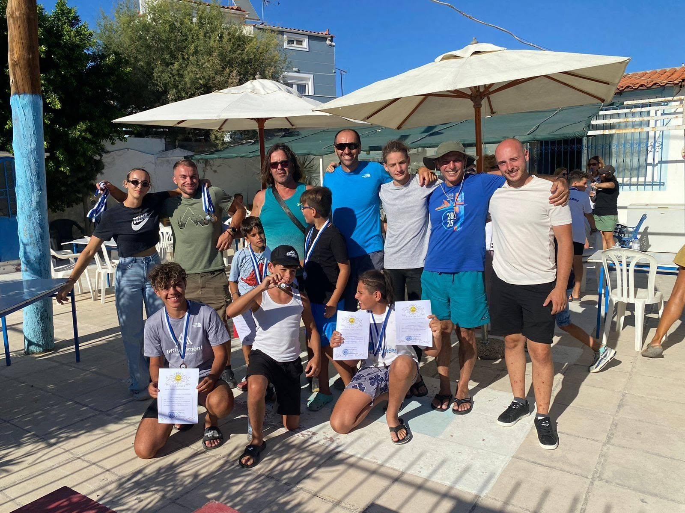

2026 • Αγώνες
Ιστορική αγωνιστική πορεία για τον ΝΟΠ
Από την 7η θέση στον Πόρο έως την 8η θέση στο Πανελλήνιο Sprint και τις κορυφαίες επιδόσεις της χρονιάς.
Διαβάστε την είδηση →ΕΝΗΜΕΡΩΣΗ ΝΟΠ
Η πορεία, οι διακρίσεις, οι δράσεις και οι σημαντικές ανακοινώσεις του Ναυτικού Ομίλου Παμβώτιδος.
Από την 7η θέση στον Πόρο έως την 8η θέση στο Πανελλήνιο Sprint και τις κορυφαίες επιδόσεις της χρονιάς.
Διαβάστε την είδηση →Ανακαίνιση γυμναστηρίου, λεμβαρχείου, αποδυτηρίων και αναβάθμιση ηλεκτρολογικών, υδραυλικών και εξοπλισμού διάσωσης.
Διαβάστε περισσότερα →ΟΜΙΛΟΣ • ΕγκαταστάσειςΠρόκριση στις εσωτερικές δοκιμασίες της 13ης Απριλίου και συνέχεια της διεθνούς αγωνιστικής πορείας.
ΑγωνιστικόΟ ΝΟΠ ανακοίνωσε την επανέναρξη των δραστηριοτήτων του μετά την περίοδο σχετικής αδράνειας 2021–2024, με νέο Διοικητικό Συμβούλιο και τον Παναγιώτη Αντωνίου ως προπονητή.
Διαβάστε περισσότερα →Ολοκληρώθηκαν οι εργασίες ανακαίνισης στο γυμναστήριο, στο λεμβαρχείο, στα αποδυτήρια και στις ηλεκτρολογικές και υδραυλικές εγκαταστάσεις.
ΥΠΟΔΟΜΕΣΗ πρόκριση του αθλητή του ΝΟΠ στις εσωτερικές δοκιμασίες επιβεβαίωσε τη σταθερή παρουσία του στην Εθνική Ομάδα Κανόε Καγιάκ Σπριντ.
Εθνική ΟμάδαΜετά από τρία χρόνια αποχής από τα Πανελλήνια Πρωταθλήματα, ο ΝΟΠ επέστρεψε στη γενική κατάταξη με σημαντική παρουσία και Πρωταθλητή Ελλάδας τον Παναγιώτη Αντωνίου στα 1000μ.
Δείτε αναλυτικά τα αποτελέσματα →Οι αθλητές του Ομίλου κατέκτησαν 5 χρυσά, 4 ασημένια και 3 χάλκινα μετάλλια σε διασυλλογικούς αγώνες Canoe Kayak και SUP.
Δείτε τις διακρίσεις →7η θέση στη γενική κατάταξη σωματείων, χρυσό μετάλλιο στον Παναγιώτη Αντωνίου στα 5000μ και δυνατές εμφανίσεις από όλη την ομάδα.
Δείτε τα αναλυτικά αποτελέσματα →Η επίσκεψη του Προέδρου Γιώργου Αθανασίου επικεντρώθηκε στην αναπτυξιακή πορεία του σωματείου και στην επανενεργοποίηση του Κανόε-Καγιάκ στη λίμνη των Ιωαννίνων.
ΕΟΚ-ΚΦΩΤΟΓΡΑΦΙΚΟ ΑΡΧΕΙΟ
Αθλητές, βάθρα και η ομάδα του ΝΟΠ σε δράση.


